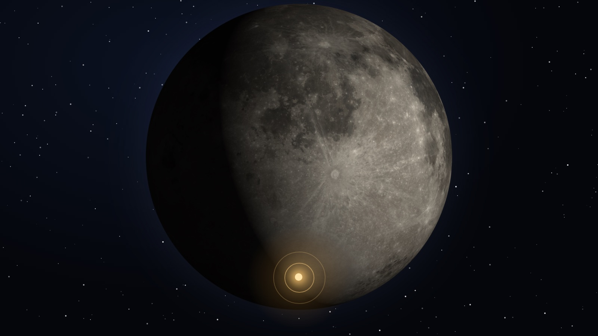

Junior Astronaut Mission Trainer · NASA Space Apps Challenge 2026
Train for the Moon by talking to CAPCOM.
A voice-first desktop app. Learn the Moon in Flight School with real Artemis crew audio and NASA videos, then run a pretend outpost at the lunar south pole. Every model runs on the computer.
Notarized Mac app · Apple silicon · 246 MB · no account, no keys · all releases

One story, four steps
Artemis II flew its crew around the Moon in April 2026. You train to help run Outpost Luna, a pretend base near the south pole for the crews who come after.
- 01
Flight School
6 core lessons and 2 explorer lessons. Each is a story beat, a few voice or tap steps, and a patch.
- 02
Check ride
One solo shift at Shackleton Rim, through the real May 2024 solar storm. Pass to earn the Mission Commander patch.
- 03
Command
Run the outpost for 10 days at one of 5 south-pole sites, with real Sun and Earth positions and real solar storms.
- 04
Debrief
What happened, the real data behind each event, and one thing to try. Then fly again.


Every input works. Talk, tap or type, use the keyboard or a game controller, or turn on the camera for hand gestures: an open hand stops, a thumbs up says yes, a fist spins the Moon. A Moon library holds 36 pieces of hardware left on the Moon, with their sources.
How it works
The ear, the tagger and the Director run on the computer and decide what each turn means. Every lane that answers works offline.
Swipe sideways to see the whole diagram.
- Hears you, not the room. Arc Transcriber Space turns speech into words and also reads the audio: is this said to the app, and is the turn over. Room talk is ignored.
- Keeps it clean. Arc Tagger's safety labels, backed by an offline word list, mask swearing wherever it would show. A masked turn is never graded or answered.
- Decides carefully. The Director's rules pick what to do: act, ignore or navigate. A small learned model checks its choices against them, and only takes over where it is proven safer.
- Speaks in one voice. The computer's own voices answer live. 889 fixed lines are pre-recorded in Siri Voice 1 (Nora), on Mac and Windows alike.
Results
Measured on the released app (v0.3.1) and on held-out test sets.
What that means in use
- ½ secondFast replies. The app knows you've finished about half a second after you stop talking, and answers in about half a second more.
- OfflineNo internet after setup. The models download once (about 510 MB); then everything runs on the computer, with no account.
- 74 clipsReal Artemis II crew audio used as lesson hooks and mission moments.
- 13 stormsReal solar storms from NASA's DONKI records (2017–2025) drive the missions.
- 5 sitesReal south-pole sites, scored with NASA LRO sunlight, Earth view, ice and slope maps.
- 16 videosNASA video in lessons: 8 files saved for offline play, 8 NASA-channel streams.
- 889 linesA recorded guide voice for every fixed line, plus the computer's own voices for live answers.
- 1,400+Automated tests on every change, including keyboard, gamepad, gesture and silent end-to-end runs.
Private by default
Private by design: no account, no cloud model, nothing uploaded.
- Runs on the computer
- The ear, the tagger, the Director, the embedder and the voices all run locally. The app window may only talk to its own local servers; anything else is blocked, apart from the NASA YouTube player.
- The mic: open or push-to-talk
- Hands-free listening by default, or push-to-talk (hold Space) in Settings. Audio is never stored.
- The camera is opt-in
- Off until you turn on gestures in Settings, with a "Camera on" chip and a Turn off button while it runs. Frames are read on the computer and never saved or sent. No face recognition.
- No account
- You pick a call sign. It and all progress stay on the device.
- Turn log: opt-in, text only
- Off by default. If a family turns on "Help improve the voice guide", the app keeps a small text log with names redacted. It is never uploaded, and "Delete what's saved" erases it.
Get started
The Mac app is ready to download. Windows builds from source, with one command.
Mac Apple silicon
Download the dmg, drag Outpost Luna to Applications, and open it. It is signed and notarized. It downloads its models once on first run, then runs with no internet.
Download for MacFrom GitHub Releases, with the dmg's SHA-256 next to it.
Windows build from source
Not yet run on a real PC: your first build is the test. Windows 10 or 11 (x64), 16 GB RAM, about 6 GB free.
- Install Git, Node 22+, uv, CMake and VS 2022 Build Tools (C++). The winget lines are in the guide.
- Clone to a short path and build:
git clone https://github.com/WhissleAI/Outpost-Luna.git C:\src\atm cd C:\src\atm powershell -ExecutionPolicy Bypass -File desktop\scripts\build-windows.ps1
- Run
desktop\dist\Outpost Luna Setup 0.1.0.exe. It is unsigned, so SmartScreen asks: More info, then Run anyway. - Check the voice picked in Settings → Voice, the time from your question's end to the first word, and that captions follow the voice.
- Logs live in
%APPDATA%\Outpost Luna\logs. Send them with the checklist.
Developers run from source
Three services: the frontend, the backend and the model server. Needs uv and Node 20+.
git clone https://github.com/WhissleAI/Outpost-Luna.git cd Outpost-Luna make setup # uv sync + npm install make data # NASA media, ~0.5 GB make dev # http://localhost:5173 make test
The Mac installer builds with make desktop-mac.
What's next
What comes after v0.3.1.
- Mission, simpler
- One clear goal at a time, one main button
- Full controller and keyboard play in the site picker
- Advanced consoles only when you need them
- A story-first debrief
- A smarter DirectorA tiny learned model, trained on the new ear and real voices, takes over more decisions as it proves itself.
- Windows, tested and signedA first tester build is under way, then a code-signing certificate so SmartScreen stops warning.
- NASA map layers for everyoneSunlight, Earth view, ice and slope layers from LRO, downloaded on first run.